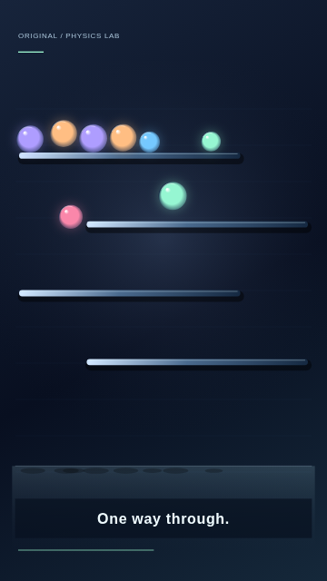
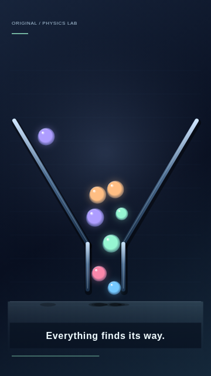
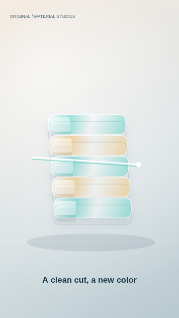
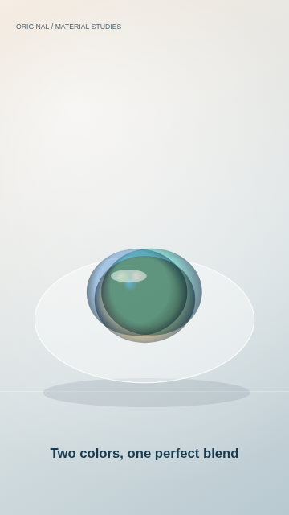
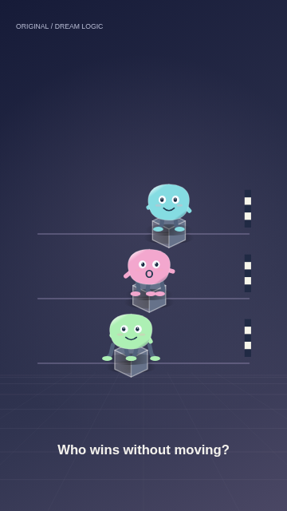
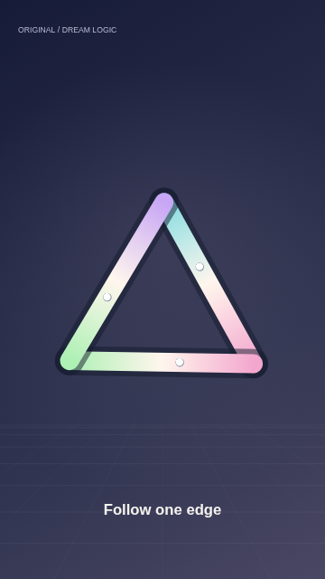
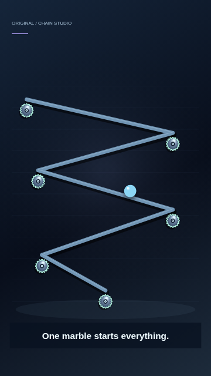
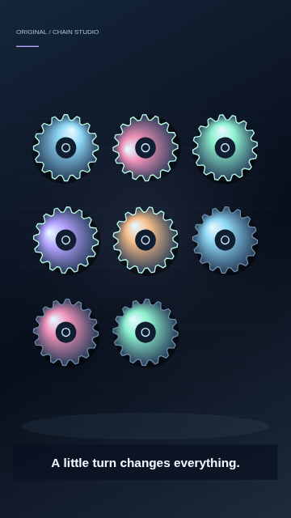

各ジャンル先行3種・計12種。4ジャンルの先頭作品は旧版/新版の実MP4付き。360×640・3秒・seed 20261103。映像・音声はすべて独自生成し、参考元の動画は使っていません。
検証環境：Chromium。配布用サンプルのみオフラインで音声をAACへ変換済み（アプリ自体は変換処理・FFmpeg不要）。iPhone実機、主観的な音質・人気・収益は未検証。描画処理時間や端点差は制作上の観測値であり、審美スコアではありません。
BALL
Rotating Ring Escape
新版MP4を保存phy-ring-escape · loop: reset
BALL
Bouncing Ball Maze

phy-maze · loop: reset
BALL
Gravity Funnel

phy-funnel · loop: reset
ASMR
Jelly Compression
新版MP4を保存asmr-jelly-compression · loop: seamless
ASMR
Prism Cut

asmr-glass-cutting · loop: reset
ASMR
Chromatic Confluence

asmr-color-mixing · loop: seamless
MEME
The Shape-Shifting Bean
新版MP4を保存surreal-creature-transformation · loop: seamless
MEME
The Slowest Race in Space

surreal-absurd-race · loop: reset
MEME
Impossible Ribbon

surreal-impossible-object · loop: seamless
DOMINO
Domino Spiral
新版MP4を保存chain-spiral · loop: reset
DOMINO
Marble Machine

chain-machine · loop: reset
DOMINO
Gear Cascade

chain-gears · loop: reset
静止画と一部の実動画による制作比較です。全60種の完成映像を人が視聴した品質保証ではありません。seamlessは周期式による設計区分で、端末の録画開始/終了や音声まで知覚的に一致する保証はありません。